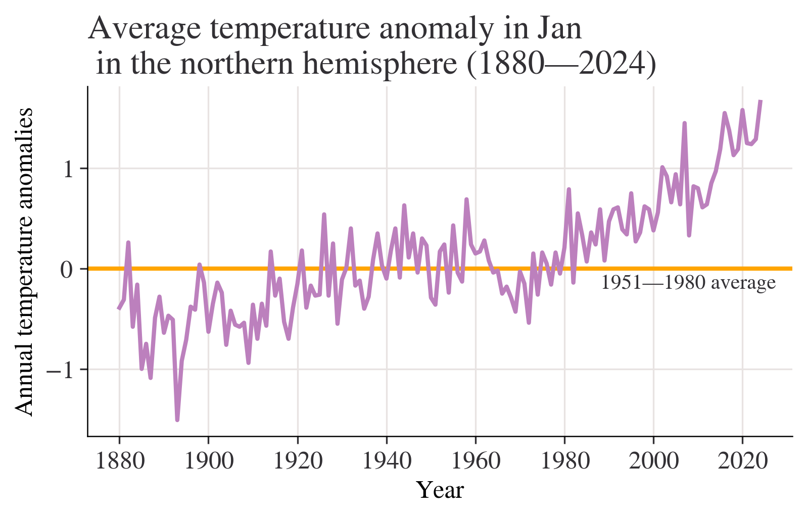
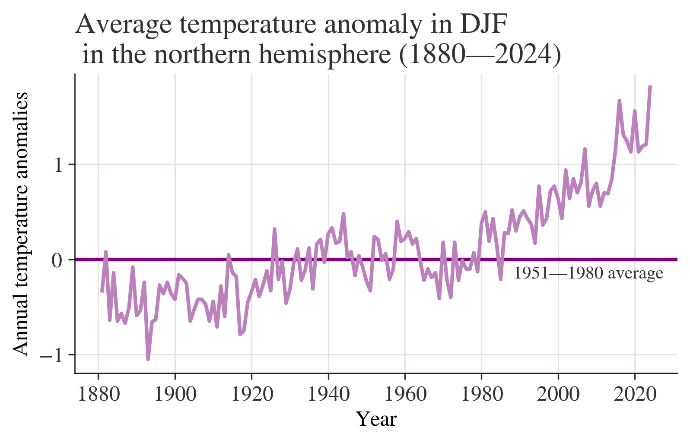
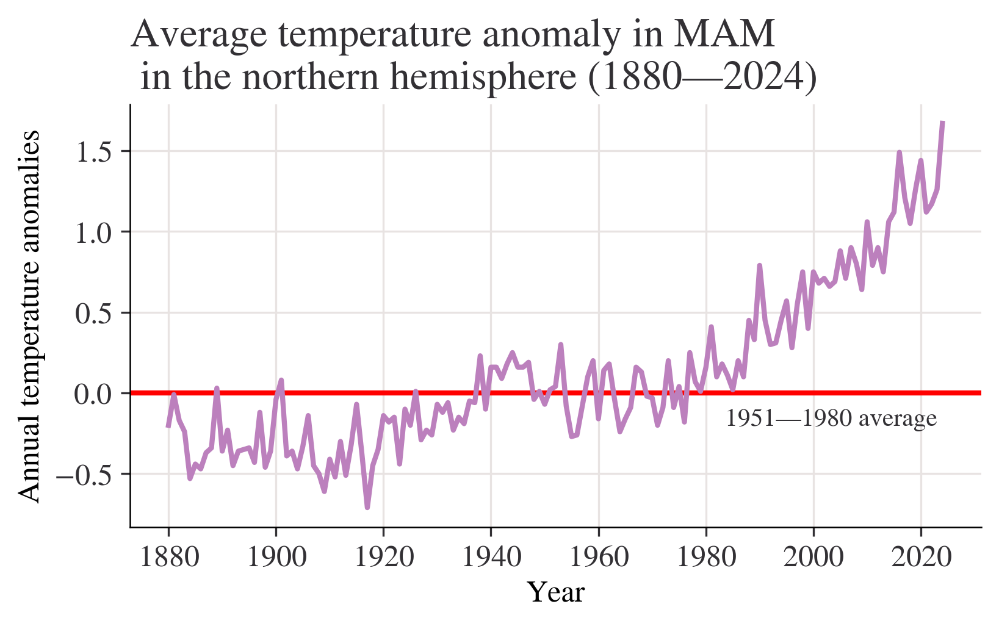
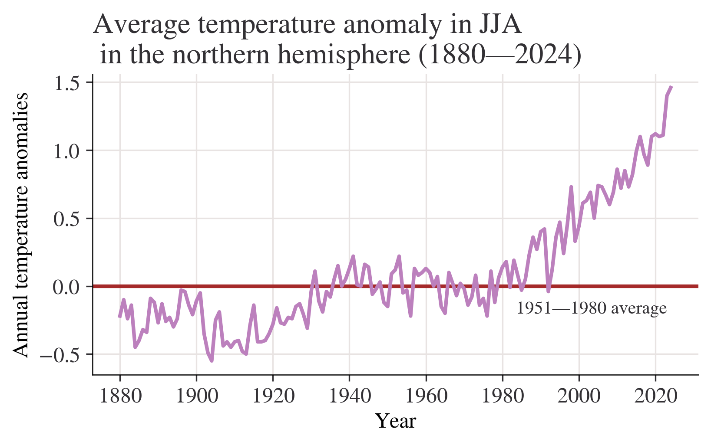
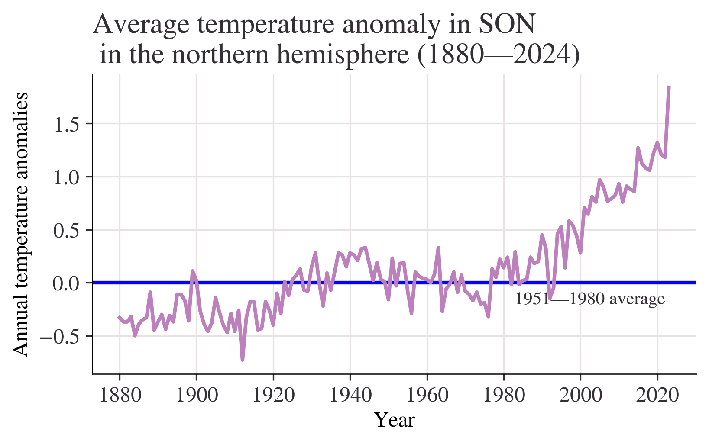
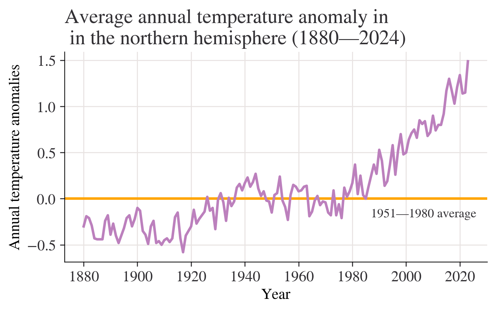
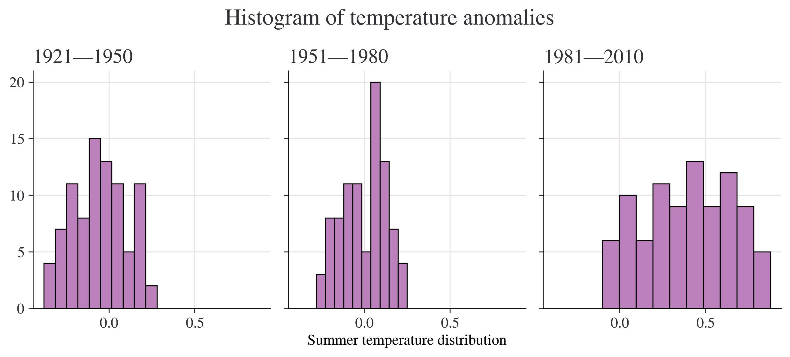

This chapter will take you through some of the essential parts of a Python workflow.
Prerequisites
You’ll need an installation of Python and Visual Studio Code with the Python extensions to get to grips with this chapter. If you haven’t installed those yet, head back to {ref}code-preliminaries and follow the instructions there.
Working with Python scripts and the interactive window
As a reminder, the figure below shows the typical layout of Visual Studio Code.
A typical user view in Visual Studio Code
When you create a new script (File->New File->Save as ’your_script_name.py), it will appear in the part of the screen labelled as 3.
To run a script, select the code you want to run, right click, and select “Run Selection/Line in Interactive Window”. You can also hit shift + enter if you set this shortcut up; if you haven’t it’s well worth doing and you can find the instructions in {ref}code-preliminaries.
Using the “Run Selection/Line in Interactive Window” option or using the shortcut will cause panel 5 in the above diagram (the interactive window) to appear, where you will see the code run and the outputs of your script appear.
If you have an issue getting the code to run in the interactive window, first check the instructions in {ref}`code-preliminaries`. If you're still having issues, it may be that Visual Studio Code isn't sure which Python to run, or where Python is on your system. To fix the latter problem, hit the "Select kernel" button in the top right-hand side of the interactive window.
When you are first writing a script, it’s useful to be able to move back and forth between the script and the interactive window. You might execute a line of code (put the cursor on the relevant line and hit shift and enter) in the interactive window, then manually write out some code in the interactive window’s execution box (seen at the bottom of panel 5 saying “Type code here…”), and then explore some of the variables you’ve created with the variable explorer (using the button “Variables”) at the top of the interactive window.
But, once you’ve honed the code in your script, it’s good to make the script a complete analytical process that you are happy running end-to-end and that—for production or ‘final’ work—you would use the “Run Current File in Interactive Window” option to run all the way through. This is good practice because what is in your script is reproducible but what you’ve entered manually in the interactive window is not. And you want the outputs from your code to be reproducible and understandable by others (including future you!), but this is hard if there are undocumented extra lines of code that you only did on the fly via the interactive window’s execution box.
Using installed packages and modules
We already saw how to install packages in {ref}code-preliminaries. If you forgot, look back at how to do this now. In short, packages are installed using the command line or, on Windows, the Anaconda prompt. With either of these open, type conda install packagename and hit enter to both search for and install the package you need.
What about using a package that you’ve installed? That’s what we’ll look at now.
Let’s see an example of using the powerful numerical library numpy. There are different ways to import packages to use within a script or notebook; you can import the entire package in one go or just import the functions you need (if you know their names). When an entire package is imported, you can give it any name you like and the convention for numpy is to import it as the shortened ‘np’. All of the functions and methods of the package can be accessed by typing np followed by . and then typing the function name. This convention of importing packages with a given name makes your code easier to read, because you know exactly which package is doing what, and avoids any conflicts when functions from different packages have the same name.
As well as demonstrating importing the whole package for numpy, the example below shows importing just one specific function from numpy, inv, which does matrix inversion. Note that because inv was imported separately it can be used without an np prefix.
We could have imported all of numpy and it used it without extension using from numpy import * but this is considered bad practice as it fills our ‘namespace’ with function names that might clash with other packages and it’s less easy to read because you don’t know which function came from which package (one of Python’s mantras is “explicit is better than implict”). However, some packages are designed to be used like this, so, for example, you will see from lets_plot import * in this book.
If you want to check what packages you have installed in your Python environment, run `conda list` on your computer's command line (aka the *terminal* or *command prompt*).
Sometimes you might forget what a function you have imported does! Or at least, you might not be sure what all of the optional arguments are. In Visual Studio Code, you can just hover your cursor over the name of the function and a box will come up that tells you everything you need to know about it. This box is auto-generated by doc-strings; information that is written in text just under a function’s definition (def statement).
An alternative way to see what a function does is to use a wonderful package called rich that does many things including providing an inspect() function. You will need to use pip to install rich by running pip install rich on the command line. Here’s an example of using rich’s inpsect method on the inv() function we imported above (methods=True reports all of the functionality of inv()):
from rich import inspectinspect(inv, help=True)
╭─────────────── <function inv at 0x000002308AF6F560> ────────────────╮│def inv(a): ││││Compute the (multiplicative) inverse of a matrix.││││Given a square matrix `a`, return the matrix `ainv` satisfying││``dot(a, ainv) = dot(ainv, a) = eye(a.shape[0])``.││││Parameters││----------││a : (..., M, M) array_like││ Matrix to be inverted.││││Returns││-------││ainv : (..., M, M) ndarray or matrix││(Multiplicative) inverse of the matrix `a`.││││Raises││------││LinAlgError││ If `a` is not square or inversion fails.││││See Also││--------││scipy.linalg.inv : Similar function in SciPy.││││Notes││-----││││.. versionadded:: 1.8.0││││Broadcasting rules apply, see the `numpy.linalg` documentation for││details.││││Examples││--------││>>> from numpy.linalg import inv││>>> a = np.array([[1., 2.], [3., 4.]])││>>> ainv = inv(a)││>>> np.allclose(np.dot(a, ainv), np.eye(2))││True││>>> np.allclose(np.dot(ainv, a), np.eye(2))││True││││If a is a matrix object, then the return value is a matrix as well:││││>>> ainv = inv(np.matrix(a))││>>> ainv││matrix([[-2. , 1. ],││[1.5, -0.5]])││││Inverses of several matrices can be computed at once:││││>>> a = np.array([[[1., 2.], [3., 4.]], [[1, 3], [3, 5]]])││>>> inv(a)││array([[[-2. , 1. ],││[1.5 , -0.5]],││[[-1.25, 0.75],││[0.75, -0.25]]])││││34 attribute(s) not shown. Run inspect(inspect) for options. │╰─────────────────────────────────────────────────────────────────────╯
from rich import inspectinspect(inv, help=True)
╭─────────────── <function inv at 0x000002308AF6F560> ────────────────╮│def inv(a): ││││Compute the (multiplicative) inverse of a matrix.││││Given a square matrix `a`, return the matrix `ainv` satisfying││``dot(a, ainv) = dot(ainv, a) = eye(a.shape[0])``.││││Parameters││----------││a : (..., M, M) array_like││ Matrix to be inverted.││││Returns││-------││ainv : (..., M, M) ndarray or matrix││(Multiplicative) inverse of the matrix `a`.││││Raises││------││LinAlgError││ If `a` is not square or inversion fails.││││See Also││--------││scipy.linalg.inv : Similar function in SciPy.││││Notes││-----││││.. versionadded:: 1.8.0││││Broadcasting rules apply, see the `numpy.linalg` documentation for││details.││││Examples││--------││>>> from numpy.linalg import inv││>>> a = np.array([[1., 2.], [3., 4.]])││>>> ainv = inv(a)││>>> np.allclose(np.dot(a, ainv), np.eye(2))││True││>>> np.allclose(np.dot(ainv, a), np.eye(2))││True││││If a is a matrix object, then the return value is a matrix as well:││││>>> ainv = inv(np.matrix(a))││>>> ainv││matrix([[-2. , 1. ],││[1.5, -0.5]])││││Inverses of several matrices can be computed at once:││││>>> a = np.array([[[1., 2.], [3., 4.]], [[1, 3], [3, 5]]])││>>> inv(a)││array([[[-2. , 1. ],││[1.5 , -0.5]],││[[-1.25, 0.75],││[0.75, -0.25]]])││││34 attribute(s) not shown. Run inspect(inspect) for options. │╰─────────────────────────────────────────────────────────────────────╯
xdzsmmfbbbei Exercise Write a code block that imports the **numpy** function `numpy.linalg.det()` as `det()`. Run `inspect()` on it. Find the determinant of `[[4, 3], [1, 7]]`.
Modules
Sometimes, you will want to call in some code from a different script that you wrote (rather than from a package provided by someone else). Imagine you have several scripts with code in, a, b, and c, all of which need to use the same underlying function that you have written. What do you do? (Note that “script with code in” is just a text file that has a .py extension and contains code.)
A central tenet of good coding is that you do not repeat yourself. Therefore, a bad solution to this problem would be to copy and paste the same code into all three of the scripts. A good solution is to write the code that’s need just once in a separate ‘utility’ script and have the other scripts import that one function. This also adheres to another important programming principle: that of writing modular code.
This schematic shows the kind of situation we’re talking about:
How can we give code files a, b, and c access to the functions etc in the “Utility script”? We would define a file ‘utilities.py’ that had the following function in that we would like to use in the other code files:
# Contents of utilities.py filedef really_useful_func(number):return number*10
Then, in ‘code_script_a.py’, we would write:
import utilities as utilsprint(utils.really_useful_func(20))
---------------------------------------------------------------------------ModuleNotFoundError Traceback (most recent call last)
Cell In[7], line 1----> 1importutilitiesasutils 3print(utils.really_useful_func(20))
ModuleNotFoundError: No module named 'utilities'
An alternative is to just import the function we want, with the name we want:
from utilities import really_useful_func as ru_fnprint(ru_fn(30))
---------------------------------------------------------------------------ModuleNotFoundError Traceback (most recent call last)
Cell In[8], line 1----> 1fromutilitiesimport really_useful_func as ru_fn
3print(ru_fn(30))
ModuleNotFoundError: No module named 'utilities'
Another important example is the case where you want to run ‘utilities.py’ as a standalone script, but still want to borrow functions from it to run in other scripts. There’s a way to do this. Let’s change utilities.py to
# Contents of utilities.py filedef really_useful_func(number):return number*10def default_func():print('Script has run')if__name__=='__main__': default_func()
What this says is that if we call ‘utilities.py’ from the command line, eg
python utilities.py
It will return Script has run because, by executing the script alone, we are asking for anything in the main block defined at the end of the file to be run. But we can still import anything from utilities into other scripts as before–and in that case it is not the main script, but an import, and so the main block will not be executed by default.
You can important several functions at once from a module (aka another script file) like this:
from utilities import really_useful_func, default_func
xdzsmmfbbbei Exercise Write your own `utilities.py` that has a `super_useful_func` that accepts a number and returns the number divided by 10. In another script, `main.py`, try a) importing all of utilities and running `super_useful_func` on a number and, b), importing just `super_useful_func` from utilities and running it on a number.
Reading and writing files
Although most applications in economics will use the pandas package to read and write tabular data, it’s sometimes useful to know how to read and write arbitrary files using the built-in Python libraries too. To open a file
open('filename', mode)
where mode could be r for read, a for append, w for write, and x to create a file. Create a file called text_example.txt and write a single line in it, ‘hello world’. To open the file and print the text, use:
withopen('text_example.txt') as f: text_in = f.read()print(text_in)
'hello world!\n'
\n is the new line character. Now let’s try adding a line to the file:
withopen('text_example.txt', 'a') as f: f.write('this is another line\n')
Writing and reading files using the with command is a quick and convenient shorthand for the less concise open, action, close pattern. For example, the above example can also be written as:
f =open('text_example.txt', 'a')f.write('this is another line\n')f.close()
Although this short example shows opening and writing a text file, this approach can be used to edit a wide range of file extensions including .json, .xml, .csv, .tsv, and many more, including binary files in addition to plain text files.
animal_s_name
Lucy 566
Bella 451
Charlie 447
Max 374
Luna 361
...
Manasseh 1
Taba 1
Miriam 1
Number Six 1
Rollins 1
Name: count, Length: 15795, dtype: int64
import pandas as pdurl ='https://raw.githubusercontent.com/tidyverse/datascience-box/refs/heads/main/course-materials/lab-instructions/lab-03/data/nobel.csv'df = pd.read_csv(url)print(df.head())
id firstname surname year category \
0 1 Wilhelm Conrad Röntgen 1901 Physics
1 2 Hendrik A. Lorentz 1902 Physics
2 3 Pieter Zeeman 1902 Physics
3 4 Henri Becquerel 1903 Physics
4 5 Pierre Curie 1903 Physics
affiliation city country \
0 Munich University Munich Germany
1 Leiden University Leiden Netherlands
2 Amsterdam University Amsterdam Netherlands
3 École Polytechnique Paris France
4 École municipale de physique et de chimie indu... Paris France
born_date died_date ... died_country_code overall_motivation share \
0 1845-03-27 1923-02-10 ... DE NaN 1
1 1853-07-18 1928-02-04 ... NL NaN 2
2 1865-05-25 1943-10-09 ... NL NaN 2
3 1852-12-15 1908-08-25 ... FR NaN 2
4 1859-05-15 1906-04-19 ... FR NaN 4
motivation born_country_original \
0 "in recognition of the extraordinary services ... Prussia (now Germany)
1 "in recognition of the extraordinary service t... the Netherlands
2 "in recognition of the extraordinary service t... the Netherlands
3 "in recognition of the extraordinary services ... France
4 "in recognition of the extraordinary services ... France
born_city_original died_country_original died_city_original \
0 Lennep (now Remscheid) Germany Munich
1 Arnhem the Netherlands NaN
2 Zonnemaire the Netherlands Amsterdam
3 Paris France NaN
4 Paris France Paris
city_original country_original
0 Munich Germany
1 Leiden the Netherlands
2 Amsterdam the Netherlands
3 Paris France
4 Paris France
[5 rows x 26 columns]
Rank Major_code Total \
Major
EARLY CHILDHOOD EDUCATION 165 2307 37589.0
COMMUNICATION DISORDERS SCIENCES AND SERVICES 164 6102 38279.0
MEDICAL ASSISTING SERVICES 52 6104 11123.0
ELEMENTARY EDUCATION 139 2304 170862.0
FAMILY AND CONSUMER SCIENCES 151 2901 58001.0
... ... ... ...
MINING AND MINERAL ENGINEERING 2 2416 756.0
CONSTRUCTION SERVICES 27 5601 18498.0
MECHANICAL ENGINEERING RELATED TECHNOLOGIES 67 2504 4790.0
MILITARY TECHNOLOGIES 74 3801 124.0
FOOD SCIENCE 22 1104 0.0
Men Women \
Major
EARLY CHILDHOOD EDUCATION 1167.0 36422.0
COMMUNICATION DISORDERS SCIENCES AND SERVICES 1225.0 37054.0
MEDICAL ASSISTING SERVICES 803.0 10320.0
ELEMENTARY EDUCATION 13029.0 157833.0
FAMILY AND CONSUMER SCIENCES 5166.0 52835.0
... ... ...
MINING AND MINERAL ENGINEERING 679.0 77.0
CONSTRUCTION SERVICES 16820.0 1678.0
MECHANICAL ENGINEERING RELATED TECHNOLOGIES 4419.0 371.0
MILITARY TECHNOLOGIES 124.0 0.0
FOOD SCIENCE 0.0 0.0
Major_category \
Major
EARLY CHILDHOOD EDUCATION Education
COMMUNICATION DISORDERS SCIENCES AND SERVICES Health
MEDICAL ASSISTING SERVICES Health
ELEMENTARY EDUCATION Education
FAMILY AND CONSUMER SCIENCES Industrial Arts & Consumer Services
... ...
MINING AND MINERAL ENGINEERING Engineering
CONSTRUCTION SERVICES Industrial Arts & Consumer Services
MECHANICAL ENGINEERING RELATED TECHNOLOGIES Engineering
MILITARY TECHNOLOGIES Industrial Arts & Consumer Services
FOOD SCIENCE Agriculture & Natural Resources
ShareWomen Sample_size \
Major
EARLY CHILDHOOD EDUCATION 0.968954 342
COMMUNICATION DISORDERS SCIENCES AND SERVICES 0.967998 95
MEDICAL ASSISTING SERVICES 0.927807 67
ELEMENTARY EDUCATION 0.923745 1629
FAMILY AND CONSUMER SCIENCES 0.910933 518
... ... ...
MINING AND MINERAL ENGINEERING 0.101852 7
CONSTRUCTION SERVICES 0.090713 295
MECHANICAL ENGINEERING RELATED TECHNOLOGIES 0.077453 71
MILITARY TECHNOLOGIES 0.000000 4
FOOD SCIENCE 0.000000 36
Employed Full_time Part_time \
Major
EARLY CHILDHOOD EDUCATION 32551 27569 7001
COMMUNICATION DISORDERS SCIENCES AND SERVICES 29763 19975 13862
MEDICAL ASSISTING SERVICES 9168 5643 4107
ELEMENTARY EDUCATION 149339 123177 37965
FAMILY AND CONSUMER SCIENCES 46624 36747 15872
... ... ... ...
MINING AND MINERAL ENGINEERING 640 556 170
CONSTRUCTION SERVICES 16318 15690 1751
MECHANICAL ENGINEERING RELATED TECHNOLOGIES 4186 4175 247
MILITARY TECHNOLOGIES 0 111 0
FOOD SCIENCE 3149 2558 1121
Full_time_year_round \
Major
EARLY CHILDHOOD EDUCATION 20748
COMMUNICATION DISORDERS SCIENCES AND SERVICES 14460
MEDICAL ASSISTING SERVICES 4290
ELEMENTARY EDUCATION 86540
FAMILY AND CONSUMER SCIENCES 26906
... ...
MINING AND MINERAL ENGINEERING 388
CONSTRUCTION SERVICES 12313
MECHANICAL ENGINEERING RELATED TECHNOLOGIES 3607
MILITARY TECHNOLOGIES 111
FOOD SCIENCE 1735
Unemployed Unemployment_rate \
Major
EARLY CHILDHOOD EDUCATION 1360 0.040105
COMMUNICATION DISORDERS SCIENCES AND SERVICES 1487 0.047584
MEDICAL ASSISTING SERVICES 407 0.042507
ELEMENTARY EDUCATION 7297 0.046586
FAMILY AND CONSUMER SCIENCES 3355 0.067128
... ... ...
MINING AND MINERAL ENGINEERING 85 0.117241
CONSTRUCTION SERVICES 1042 0.060023
MECHANICAL ENGINEERING RELATED TECHNOLOGIES 250 0.056357
MILITARY TECHNOLOGIES 0 0.000000
FOOD SCIENCE 338 0.096931
Median P25th P75th \
Major
EARLY CHILDHOOD EDUCATION 28000 21000 35000
COMMUNICATION DISORDERS SCIENCES AND SERVICES 28000 20000 40000
MEDICAL ASSISTING SERVICES 42000 30000 65000
ELEMENTARY EDUCATION 32000 23400 38000
FAMILY AND CONSUMER SCIENCES 30000 22900 40000
... ... ... ...
MINING AND MINERAL ENGINEERING 75000 55000 90000
CONSTRUCTION SERVICES 50000 36000 60000
MECHANICAL ENGINEERING RELATED TECHNOLOGIES 40000 27000 52000
MILITARY TECHNOLOGIES 40000 40000 40000
FOOD SCIENCE 53000 32000 70000
College_jobs Non_college_jobs \
Major
EARLY CHILDHOOD EDUCATION 23515 7705
COMMUNICATION DISORDERS SCIENCES AND SERVICES 19957 9404
MEDICAL ASSISTING SERVICES 2091 6948
ELEMENTARY EDUCATION 108085 36972
FAMILY AND CONSUMER SCIENCES 20985 20133
... ... ...
MINING AND MINERAL ENGINEERING 350 257
CONSTRUCTION SERVICES 3275 5351
MECHANICAL ENGINEERING RELATED TECHNOLOGIES 1861 2121
MILITARY TECHNOLOGIES 0 0
FOOD SCIENCE 1183 1274
Low_wage_jobs
Major
EARLY CHILDHOOD EDUCATION 2868
COMMUNICATION DISORDERS SCIENCES AND SERVICES 5125
MEDICAL ASSISTING SERVICES 1270
ELEMENTARY EDUCATION 11502
FAMILY AND CONSUMER SCIENCES 5248
... ...
MINING AND MINERAL ENGINEERING 50
CONSTRUCTION SERVICES 703
MECHANICAL ENGINEERING RELATED TECHNOLOGIES 406
MILITARY TECHNOLOGIES 0
FOOD SCIENCE 485
[173 rows x 20 columns]
import pandas as pdimport numpy as npimport matplotlib.pyplot as plta=df['Median'].groupby(df['Major_category']).sum()a.plot.bar()plt.show()
import pandas as pdimport matplotlib as mplimport matplotlib.pyplot as pltimport numpy as npfrom pathlib import Pathimport pingouin as pgfrom lets_plot import*LetsPlot.setup_html(no_js=True)plt.style.use("https://raw.githubusercontent.com/aeturrell/core_python/main/plot_style.txt")
month ="Jan"fig, ax = plt.subplots()ax.axhline(0, color="orange")ax.annotate("1951—1980 average", xy=(0.66, -0.2), xycoords=("figure fraction", "data"))df[month].plot(ax=ax)ax.set_title(f"Average temperature anomaly in {month}\n in the northern hemisphere (1880—{df.index.max()})")ax.set_ylabel("Annual temperature anomalies");

season ="DJF"fig, ax = plt.subplots()ax.axhline(0, color="purple")ax.annotate("1951—1980 average", xy=(0.66, -0.2), xycoords=("figure fraction", "data"))df[season].plot(ax=ax)ax.set_title(f"Average temperature anomaly in {season}\n in the northern hemisphere (1880—{df.index.max()})")ax.set_ylabel("Annual temperature anomalies");

season ="MAM"fig, ax = plt.subplots()ax.axhline(0, color="red")ax.annotate("1951—1980 average", xy=(0.66, -0.2), xycoords=("figure fraction", "data"))df[season].plot(ax=ax)ax.set_title(f"Average temperature anomaly in {season}\n in the northern hemisphere (1880—{df.index.max()})")ax.set_ylabel("Annual temperature anomalies");

season ="JJA"fig, ax = plt.subplots()ax.axhline(0, color="brown")ax.annotate("1951—1980 average", xy=(0.66, -0.2), xycoords=("figure fraction", "data"))df[season].plot(ax=ax)ax.set_title(f"Average temperature anomaly in {season}\n in the northern hemisphere (1880—{df.index.max()})")ax.set_ylabel("Annual temperature anomalies");

season ="SON"fig, ax = plt.subplots()ax.axhline(0, color="blue")ax.annotate("1951—1980 average", xy=(0.66, -0.2), xycoords=("figure fraction", "data"))df[season].plot(ax=ax)ax.set_title(f"Average temperature anomaly in {season}\n in the northern hemisphere (1880—{df.index.max()})")ax.set_ylabel("Annual temperature anomalies");

Question:What do your charts from Questions 2 to 4(a) suggest about the relationship between temperature and time? answer:Chart from question 2 shows that most of temperature anomalies are between -1 - 1,the year with the lowest temperature anomaly is between 1880-1900,the highest is in 2020.Although the data is floating up or down,the overall trend is slowly upward. We can get a more clearly Chart from question 3 with titles of x label and y label.Besides,a horizontal line is added to make the chart easier to read.We can easily see how these statistics float with the average line marked. Chart from question 4(a) shows that the overall trend is slowly upward.Data from 1880 to 2000 is rising slowly,but we can see that after 2000,(2000-2020) the chart shows a trend which is soaring dramatically without obvious decrease.
month ="J-D"fig, ax = plt.subplots()ax.axhline(0, color="orange")ax.annotate("1951—1980 average", xy=(0.68, -0.2), xycoords=("figure fraction", "data"))df[month].plot(ax=ax)ax.set_title(f"Average annual temperature anomaly in \n in the northern hemisphere (1880—{df.index.max()})")ax.set_ylabel("Annual temperature anomalies");

Question of 6(a):Discuss the similarities and differences between the charts. answer of 6(a):the variables of horizontal axes are both years,the variables of vertical axes are both temperatures,but the specific statistics are different,the gaps between two numbers are different,too.The lines are not the same.The chart from question 4 shows a slowly rising trend.However,the chart from Figure 1.5 shows no obvious rising. Question of 6(b):Looking at the behaviour of temperature over time from 1000 to 1900 in Figure 1.4, are the observed patterns in your chart unusual? answer of 6(b):I thought the question may be wrong?It should be Figure 1.5? I will answer the question based on Figure 1.5. These data fluctuate from -0.6 - 0 from 1000 to 1900.The overall trend are basically flat without sharp ascent or descent.It may not be unusual. Question of 6(c):Based on your answers to Questions 4 and 5, do you think the government should be concerned about climate change? answer of 6(c):I think the government should be concerned about climate change with no doubt.The statistics from Questions 4 and 5 shows the rising temperature these years.We can even see an obvious sharp rise after 2020,which shows the temperature of North Hemisphere is higer and higher because of the global warming,I think.The problem of the environment should be noticed and stressed.
Year
2005 1981—2010
2006 1981—2010
2007 1981—2010
2008 1981—2010
2009 1981—2010
2010 1981—2010
2011 NaN
2012 NaN
2013 NaN
2014 NaN
2015 NaN
2016 NaN
2017 NaN
2018 NaN
2019 NaN
2020 NaN
2021 NaN
2022 NaN
2023 NaN
2024 NaN
Name: Period, dtype: category
Categories (3, object): ['1921—1950' < '1951—1980' < '1981—2010']
Year
1880 Jun -0.18
Jul -0.22
Aug -0.26
1881 Jun -0.34
Jul 0.09
dtype: float64
fig, axes = plt.subplots(ncols=3, figsize=(9, 4), sharex=True, sharey=True)for ax, period inzip(axes, df["Period"].dropna().unique()): df.loc[df["Period"] == period, list_of_months].stack().hist(ax=ax) ax.set_title(period)plt.suptitle("Histogram of temperature anomalies")axes[1].set_xlabel("Summer temperature distribution")plt.tight_layout();

Question of 1.4 2(b):Using your charts, describe the similarities and differences (if any) between the distributions of temperature anomalies in 1951–1980 and 1981–2010. answer of 1.4 2(b):most of the count of the number of anomalies that fall in the interval of these two charts are between 0-15.The bin width is also different.Bins of 1951-1980 differs from -0.3 - 0.25.However,Bins of 1981-2010 differs from -0.1 - 0.9.The most frequently encountered temperature interval of 1951-1980 is 20,which is far higher than that of 1981-2010.
# Create a variable that has years 1951 to 1980, and months Jan to Dec (inclusive)temp_all_months = df.loc[(df.index >=1951) & (df.index <=1980), "Jan":"Dec"]# Put all the data in stacked format and give the new columns sensible namestemp_all_months = ( temp_all_months.stack() .reset_index() .rename(columns={"level_1": "month", 0: "values"}))# Take a look at this data:temp_all_months
Year
month
values
0
1951
Jan
-0.36
1
1951
Feb
-0.51
2
1951
Mar
-0.19
3
1951
Apr
0.07
4
1951
May
0.17
...
...
...
...
355
1980
Aug
0.09
356
1980
Sep
0.10
357
1980
Oct
0.12
358
1980
Nov
0.20
359
1980
Dec
0.09
360 rows × 3 columns
quantiles = [0.3, 0.7]list_of_percentiles = np.quantile(temp_all_months["values"], q=quantiles)print(f"The cold threshold of {quantiles[0]*100}% is {list_of_percentiles[0]}")print(f"The hot threshold of {quantiles[1]*100}% is {list_of_percentiles[1]}")
The cold threshold of 30.0% is -0.1
The hot threshold of 70.0% is 0.1
Question of 1.5 4:Does your answer suggest that we are experiencing hotter weather more frequently in this timeframe? Answer of 1.5 4:According to’In decile terms, temperatures in the 1st to 3rd deciles are ‘cold’ and temperatures in the 7th to 10th deciles or above are ‘hot’’,obviously,we are experiencing hotter weather more frequently in this timeframe.
# Create a variable that has years 1981 to 2010, and months Jan to Dec (inclusive)temp_all_months = df.loc[(df.index >=1981) & (df.index <=2010), "Jan":"Dec"]# Put all the data in stacked format and give the new columns sensible namestemp_all_months = ( temp_all_months.stack() .reset_index() .rename(columns={"level_1": "month", 0: "values"}))# Take a look at the start of this data data:temp_all_months.head()
Year
month
values
0
1981
Jan
0.79
1
1981
Feb
0.62
2
1981
Mar
0.68
3
1981
Apr
0.39
4
1981
May
0.18
entries_less_than_q30 = temp_all_months["values"] < list_of_percentiles[0]proportion_under_q30 = entries_less_than_q30.mean()print(f"The proportion under {list_of_percentiles[0]} is {proportion_under_q30*100:.2f}%")
The proportion under -0.1 is 1.94%
proportion_over_q70 = (temp_all_months["values"] > list_of_percentiles[1]).mean()print(f"The proportion over {list_of_percentiles[1]} is {proportion_over_q70*100:.2f}%")
The proportion over 0.1 is 84.72%
temp_all_months = ( df.loc[:, "DJF":"SON"] .stack() .reset_index() .rename(columns={"level_1": "Season", 0: "Values"}))temp_all_months["Period"] = pd.cut( temp_all_months["Year"], bins=[1921, 1950, 1980, 2010], labels=["1921—1950", "1951—1980", "1981—2010"], ordered=True,)# Take a look at a cut of the data using `.iloc`, which provides positiontemp_all_months.iloc[-135:-125]
min_year =1880( ggplot(temp_all_months, aes(x="Year", y="Values", color="Season"))+ geom_abline(slope=0, color="black", size=1)+ geom_line(size=1)+ labs( title=f"Average annual temperature anomaly in \n in the northern hemisphere ({min_year}—{temp_all_months['Year'].max()})", y="Annual temperature anomalies", )+ scale_x_continuous(format="d")+ geom_text( x=min_year, y=0.1, label="1951—1980 average", hjust="left", color="black" ))
Question of 1.6 5(b):For each season, compare the variances in different periods, and explain whether or not temperature appears to be more variable in later periods answer of 1.6 5(b):We can see that variances in different periods differs.But the difference between 1921-1950 and 1950-1980 is very small.However,the variance in 1981-2010 is upward sharply.So we can say temperature appears to be more variable in later periods Question of 1.7 6:whether temperature appears to be more variable over time. Would you advise the government to spend more money on mitigating the effects of extreme weather events? Answer of 1.7 6:Of course temperature appears to be more variable over time.,especially in 1981-2010,temperature is rising obviously,which shows the environment is getting worse and worse.I strongly recommend the government to spend more money on mitigating the effects of extreme weather events,otherwise,we human beings have to face the bad result.
Question of part 1.3 1:whether or not you think this data is a reliable representation of the global atmosphere answer of part 1.3 1:Considering that Dave Keeling, who was the first to make accurate measurements of CO2 in the atmosphere, chose the site high up on the slopes of the Mauna Loa volcano,air there must be different from other regions.I don’t think it is a reliable representation of the global atmosphere. Question of part 1.3 2:In your own words, explain the difference between these two measures of CO2 levels. answer of part 1.3 2:The variable interpolated is always a little bit higher than the variable trend. Question of part 1.3 3:What does this chart suggest about the relationship between CO2 and time? answer of part 1.3 3:There is a strong positive association between the two variables-higher temperature anomalies are associated with higher CO2 levels. Question of part 1.3 4:Calculate and interpret the (Pearson) correlation coefficient between these two variables;discuss the shortcomings of using this coefficient to summarize the relationship between variables answer of part 1.3 4:In this case, the correlation coefficient tells us that an upward-sloping straight line is quite a good fit to the date (as seen on the scatterplot). There is a strong positive association between the two variables (higher temperature anomalies are associated with higher CO2 levels).
One limitation of this correlation measure is that it only tells us about the strength of the upward- or downward-sloping linear relationship between two variables; in other words, how closely the scatterplot aligns along an upward- or downward-sloping straight line. The correlation coefficient cannot tell us if the two variables have a different kind of relationship (such as that represented by a wavy line).